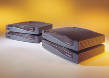
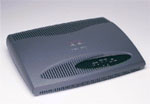
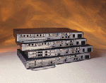

Cisco dà
la possibilità ai suoi clienti di scegliere tra una vasta gamma dei
suoi prodotti, attraverso varie Serie, tra le quali menzioniamo le seguenti:
Serie
800
La serie Cisco 800 di routers fornisce una sicurezza estesa, bassi costi di
esercizio, una buona affidabilità e un investimento sicuro attraverso
la potenza di Cisco IOS®, il software su misura per le piccole aziende.

La serie Cisco 800 può connettere gli utenti a internet o ad una LAN via ISDN, seriale, ADSL o dual Ethernet.
È
possibile inoltre per i fornitori di servizi sviluppare servizi a valore aggiunto
ad esempio per la sicurezza con Firewall
e Virtual Private Network,
o differenziate classi di servizi tramite le funzioni QoS
(Quality of Services).
Serie
1600
La serie di Router Cisco 1600 connette Ethernet LANs
a WANs via ISDN,
connessioni seriali sincrone e asincrone, supporta il Frame
Relay, Switched 56, Switched
Multimegabit Data Service (SMDS), e X.25.

Serie 2600 — Router modulare multifunzione
Cisco Systems fornisce versatilità, integrazione e potenza alle filiali
grazie alla famiglia di router modulari multifunzione della serie Cisco 2600.
Essa fornisce una soluzione a basso costo per soddisfare le esigenze di un'azienda
attraverso le seguenti caratteristiche: 
L'architettura modulare di Cisco serie 2600 consente di eseguire aggiornamenti
delle interfacce, in modo da consentirne l'adattamento ad espansioni della rete
o a modifiche della tecnologia conseguenti alla implementazione di nuovi servizi
e applicazioni.
Le schede di interfaccia WAN disponibili per i router della serie Cisco 1600, 2600 supportano una vasta gamma di opzioni per porte seriali, ISDN BRI (Integrated Services Digital Network Basic Rate Interface) e CSU/DSU (Channel Service Unit/Data Service Unit) per il collegamento WAN principale e di backup.